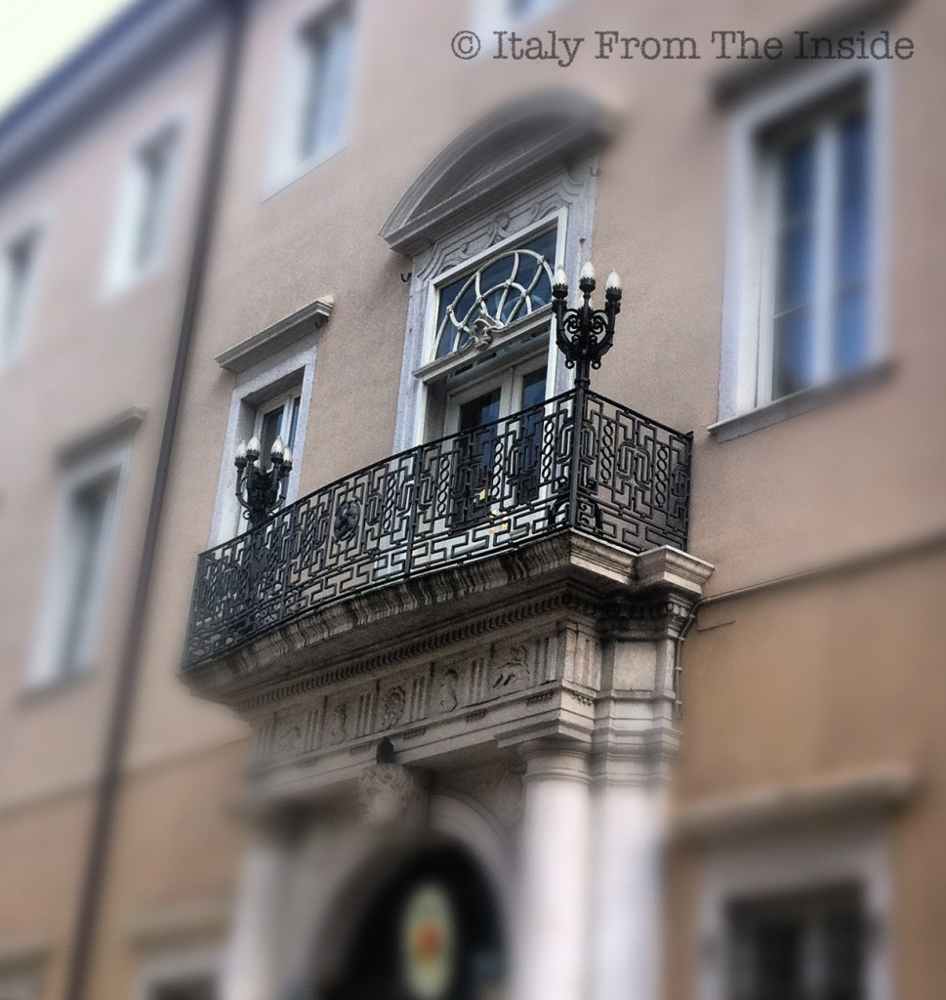

Guess what I was trying to emphasize in this photo... Right, the wrought iron balcony. The fact is that I love this balcony, particularly the two candelabra, which makes it look very much "Beauty and the Beast". And maybe the reality is not that far from the fiction: it seems that a very solitary and rich man used to live in this building. After he died, his coffin abruptly fell on the ground during the funeral procession and his corpse rolled down the hill. Oops.